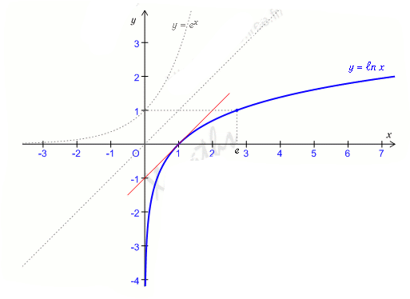

La fonction réciproque de la fonction exponentielle est la fonction logarithme népérien. On la note: 𝓁
𝓃 : ]0 ; +∞[ → ℝ
𝑥 → 𝓁𝓃 𝑥
Pour tout réel 𝑥, on a 𝓁𝓃 ( ⅇ𝑥)
Pour tout réel strictement positif 𝑥, on a ⅇ𝓁𝓃𝑥 = 𝑥
ⅇ𝑥 = 𝘺 ⎱ ⎰ 𝑥= 𝓁𝓃(𝘺) 𝑥 ∈ ℝ ⎰ ⇔ ⎱ 𝘺 ∈ ]0 ; +∞[
La fonction 𝓁𝓃 est définie, continue et dérivable sur ]0 ; +∞[, et on a (𝓁𝓃𝑥)' = ⅟𝑥.
La fonction 𝓁𝓃 s'annule en 1 donc 𝓁𝓃(1) = 0. D'autre part 𝓁𝓃ⅇ= 1.
La fonction 𝓁𝓃 est strictement croissante sur ]0 ; +∈[.
𝑥 > 1 ⇔ 𝓁𝓃𝑥 > 0 et 0 <𝑥 < 1 ⇔ 𝓁𝓃𝑥 < 0.
Si 𝓊 est une fonction strictement positive et dérivable sur un intervalle I, alors la fonction composée 𝓁𝓃∘𝓊 est dérivable sur I et on a : (𝓁𝓃∘𝓊)' = 𝓊'/𝓊 .
Toute fonction de la forme 𝓊'/𝓊 a pour primitive 𝓁𝓃 |𝓊| sur tout intervalle dans lequel 𝓊 ne s'annule pas. Si 𝓊 est strictement positive, 𝓊'/𝓊 a pour primitive 𝓁𝓃(𝓊).
2) Relation fonctionnelle
𝑎 et 𝑏 étant deux réels on a: 𝓁𝓃(𝑎.𝑏) = 𝓁𝓃 𝑎 + 𝓁𝓃 𝑏 𝓁𝓃( 𝑎n) = n.𝓁𝓃 𝑎 pour tout n ∈ ℤ 𝓁𝓃 ( ⅟𝑎) = ->𝓁𝓃(𝑎) 𝓁𝓃(𝑎/𝑏) = 𝓁𝓃( 𝑎) - 𝓁𝓃 (𝑏 )
𝓁𝓃 √𝑎 = 1/2 𝓁𝓃 𝑎
Si α1, α2,...,αn sont des réels strictement positifs, on a : 𝓁𝓃 (α1, α2,...,αn) = 𝓁𝓃α1 + 𝓁𝓃α2 + ... + 𝓁𝓃αn
La tangente à la courbe au point d'abscisse 1 a pour coefficient directeur 1, c'est la droite d'équation 𝘺 = 𝑥 - 1
La courbe de la fonction 𝓁𝒾 est symétrique de la courbe de la fonction exponentielle par rapport à la droite d'équation 𝘺 = 𝑥

Maintenant que vous avez fini la lecon sur ce chapitre,
on vous a proposé une Quiz pour tester vous connaissance sur cette leçon.
Allez! C'est parti! Balançez-vous! Cliquer sur le smiley!